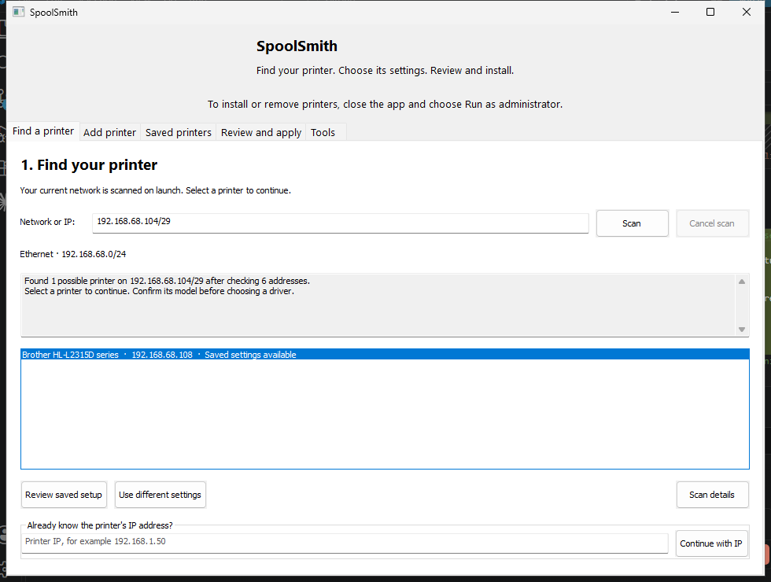

Copy a working printer from one Windows PC to another — driver included — or find one on the network and save its settings. Every change is previewed before anything happens.
SpoolSmith now runs as a desktop app. It reads the network this PC is connected to and starts scanning it, so the first thing you see is your own printers — not an empty prompt.

A printer you have set up before is marked, and the button becomes “Review saved setup”.
The model the printer reports picks out a matching installed driver for you to confirm. You can change it, and the exact name is never guessed at install time.
Every change is previewed first and applied only after you confirm the plan you were shown. Change any input and the preview has to be run again.
A workflow worth repeating
The next visit starts a step ahead.
That front-desk printer. The one in accounts. The Brother you always end up configuring. Turn what you learn into a small library you can use again.
01 / FIND
Open the app. The scan starts itself.
SpoolSmith reads the network this PC is connected to and looks for printers on it. Scan a different subnet, or go straight in with an address you already know.
Automatic scan, subnet override, or a known IP02 / SAVE
Keep the settings. Skip the rediscovery.
Name the printer and confirm its Windows driver, suggested from the model the printer reports. The details are captured in a reusable JSON profile.
One file per printer03 / COPY
New workstation. Familiar printer.
Copy a working queue into a single file — driver files and all — and apply it on the next PC after reviewing the plan. Applying it twice changes nothing the second time.
Copy, apply, repoint, remove
Built for everyday IT
Run it again. It’s still one printer.
Repeated setup should be uneventful. SpoolSmith reuses a matching queue and port, and asks you to use configure when the queue’s settings differ.
Need it gone? Remove the queue from its profile. Shared ports and drivers stay available to the printers that still use them.
Run the desktop app, or the same operations from PowerShell. Use a current source build for the workflow below; published releases may have fewer features.
02 / CHOOSE YOUR STARTING POINT
One PC has it. Give it to the next.
On the PC that already prints, see what it has and copy one queue. Omit the queue name to choose from a numbered list. --include-driver carries the driver files too, and needs an administrator prompt.
Apply checks the printer still answers as the device that was captured. Away from the printer, --offline skips that check and says so in the plan.
Build it, then just open it.
Run it as administrator when you are ready to apply a change; finding printers and saving their settings works without that.
go build -ldflags="-H windowsgui" -o dist/spoolsmith-gui.exe ./cmd/spoolsmith-gui
.\dist\spoolsmith-gui.exe
The manifest is embedded in the executable, so it can be copied or renamed freely. The app scans the network this PC is on as it opens. It does not yet do the copy workflow — that is command line only.
Capture it once. Keep it handy.
Replace the example IP and driver name with yours. To find the driver’s exact name, run Get-PrinterDriver | Select-Object Name.
Matching queue and port settings are reused. Your profile remains available for the next workstation.
Where we are today
Small start. Useful already.
SpoolSmith is in active development. Copying a printer between PCs works and has been run against real hardware; broad automatic driver setup is still ahead.
Read a working queue off one PC, carry it — with its driver files — in a single file, and apply it on another after reviewing the plan. Verified on Windows 11: a 115-file Brother package exported, bundled, hash-checked, then staged and registered on a machine that had no such driver.
Released in v0.5.0
Working away from the printer
Provision a queue before the printer is reachable with --offline. The plan states plainly that live identity was not checked. repoint moves an existing queue to a new address without disturbing its name or driver.
Verified on hardware
Brother HL-L2315D
Discovery and queue setup worked. A second add left the queue and port unchanged. The operator sent a test print and watched it work. The screenshots above are the real app, scanning a real network.
In progress
The desktop app catches up
The app still does find, save and review; copying and applying are command line only for now. Bringing them into the app is the next release’s work, alongside Intune packaging that is in source but not yet shipped.
Yours to keep, inspect, and improve
A few saved printers today. A shorter setup tomorrow.
Free, MIT-licensed software for people who do the printer setup.
{kind=link}
{kind=link}
{kind=link}